Example 1
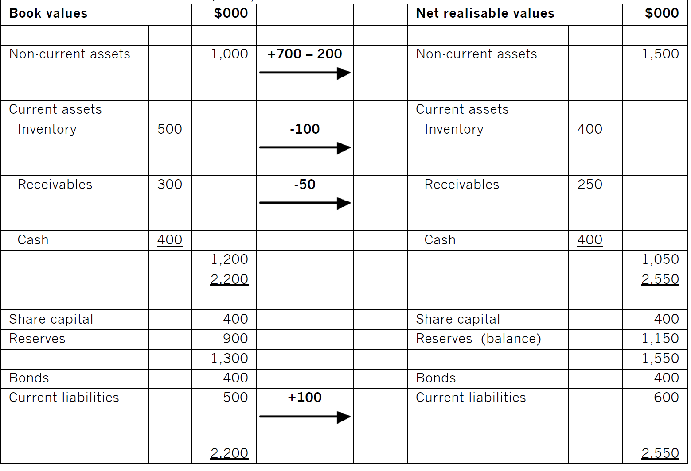
The minimum amount that the shareholders should accept for this business is:
2,550,000 – 400,000 – 600,000 =$1,550,000
Or the amount of share capital plus reserves after revaluation
Example 2
As large listed companies such as Tesco often have diversified activities, we should make sure that there is not too much distortion in the P/E ratio when using this information to estimate P/E ratio. Here we assume that any distortion is not material.
Usually, it is better to calculate the average P/E ratio of the selected listed companies. The average P/E ratio of the supermarket industry is 10.2.
The target company’s post tax earnings are $200,000. The value of equity would be: 10.2 x $200,000 = $2,040,000.
Example 3
(1) First calculate the shareholders’ rate of return in the listed company, and then apply that to the unlisted company.
Step1 listed company
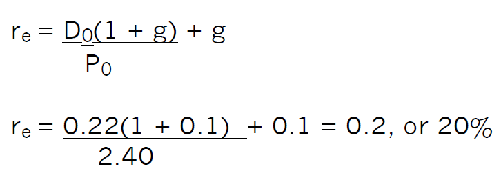
Step 2 unlisted company
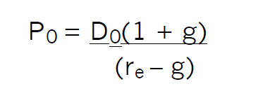
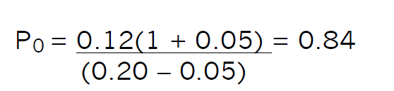
So, the value of a share in Company A is $0.84.
(2) calculate the shareholders’ required rate of return in the listed company using the CAPM:
re = Rf + β(Rm – Rf) = 5% + 1.6(15% – 5%) = 21%
This is the return required by the shareholders of a company geared in the ratio D:E = 2:5. However, Company B is ungeared, so 21% is inappropriate for the shareholders of that company. So we need to adjust beta values to take account of gearing difference.
Step 1 convert the beta value of the geared listed company to the asset beta value of the ungeared company:
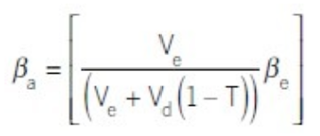
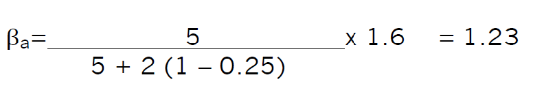
Step 2 calculate the cost of equity of an ungeared company in the same business using the CAPM:
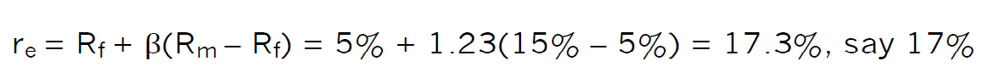
Step 3 calculate the value of a share in the unlisted, ungeared Company B:
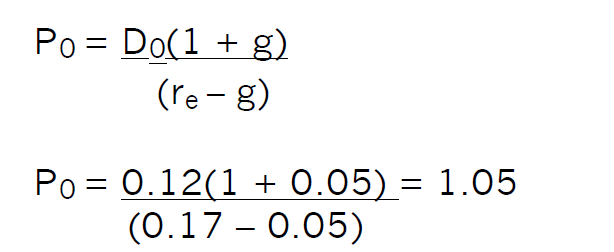
remember that this calculation would be a starting point for negotiation
Example 4
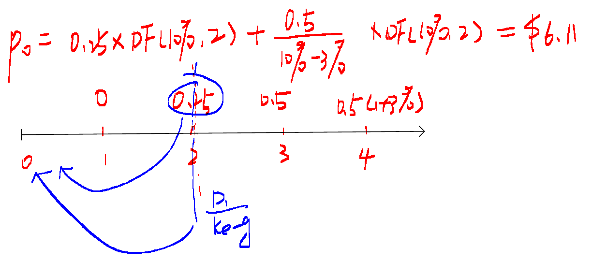
Example 5
(1)
| year | 0 | 1 | 2 | 3 | 4 | 5 |
|---|---|---|---|---|---|---|
| Cash flow | (100,000) | (80,000) | 60,000 | 100,000 | 150,000 | 150,000 |
| DF(15%) | 1 | 0.870 | 0.757 | 0.658 | 0.572 | 0.494 |
| Present value | (100,000) | (69,600) | 45,360 | 65,800 | 85,800 | 74,550 |
| NPV | $101,910 |
The maximum price that the company will pay for shares of D is $101,910.
(2) present value of cash flows from year 6 onwards in perpetuity
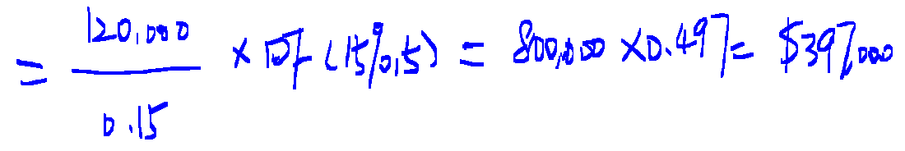
This increases the valuation from $101,910 to $499,510.
Note: business valuations depend on assumptions that are used to reach the valuation.
Example 6 C
Example 7 B
Example 8 (1) completely inefficient
Example 9 D random walk
Example 10-2014 Dec C
Example 11
P0=100*7%*AF(9%,7)+100*(1+5%)*DF(9%,7)
=7*5.033+105*0.547=$92,666
Example 12
Conversion value in 5 year= 2.5*(1+4%)^5*35 =$106.46
As the conversion value is higher than the nominal value, so the holder will convert it into shares.
P0 =100*9%*AF(10%,5)+106.46*AF(10%,5) = 9*3.791+106.46*0.621 = $100.23
Floor value =100*9%*AF(10%,5)+100*AF(10%,5) =9*3.791+100*0.621 = $96.22
Current conversion value = 2.5*35 = $87.5
Conversion premium = MV of bonds – current conversion value
= $100.23-$87.5= $12.73
Example 13
- Share price increase 4% per year
Conversion value in 7 years = 6.5*1.047*11 =$94.05
Redemption value in 8 years = 100+7 =$107
Discounting redemption value as at the end of 7 years: $ 107*0.926 =$99.08
Obviously, investors will likely hold bonds until redemption after eight years.
P0 =100*7%*AF(8%,8)+100*DF(8%,8) = 7*5.747+100*0.540 = $94.23
This is also the floor value of the bonds
- Share price increase 6% per year
Conversion value in 7 years = 6.5*1.067*11 =$107.47
Redemption value discounted at the end of 7 years: $ 107*0.926 =$99.08
Obviously, investors will prefer to conversion in 7 years as it is higher than the redemption value in year 7 terms.
P0 =100*7%*AF(8%,7)+107.47*DF(8%,7) = 7*5.206+107.47*0.583 = $99.10
Past paper example-Bluebell Co (Mar/Sep 2019)
(1)
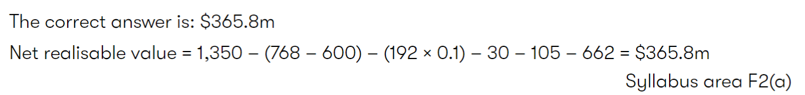
(2)
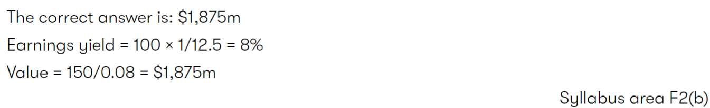
(3)
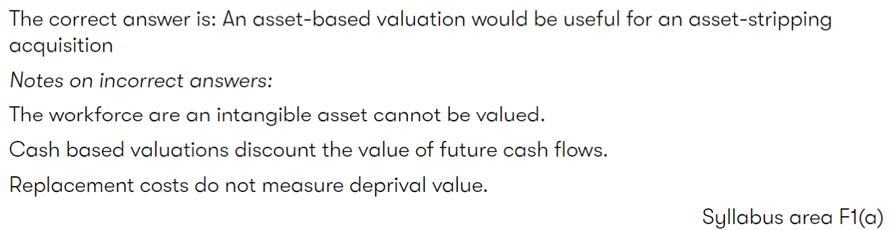
Asset-stripping acquisition:资产剥离式并购
Deprival value:剥夺价值，概念的法律意义大于会计意义，当企业业主被剥夺了该资产时，他为了获得补偿而需要得到的现金总额。
可以理解为：重置成本和可收回金额当中较低的那个（谨慎性原则）。可收回金额是未来现金流量和可变现净值中较高的那个（经济学里理性经济人假设）。
(4)
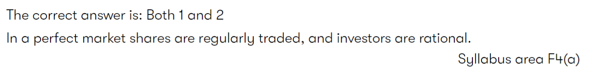
(5)
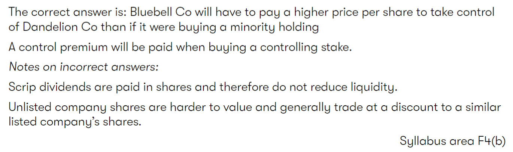